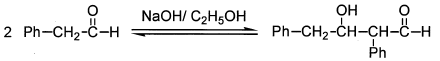
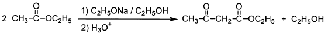
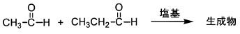
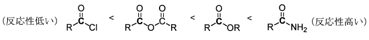
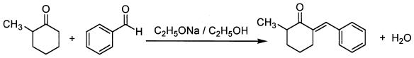

令和4年度 問3 有機化学及び燃料
カルボニル縮合反応に関する次の記述のうち、不適切なものはどれか。（Rはアルキル基、Phはフェニル基を意味する。）
①
次のアルドール反応によりβ－ヒドロキシアルデヒドが生成する。

②
次のClaisen縮合によりβ－ケトエステルが生成する。

③
次の混合アルドール反応では複数の生成物からなる混合物を与える。

④
カルボニル基の求核試薬に対する反応性は次のとおりである。

⑤
次の混合アルドール反応では混合物ではなく、単一の生成物を与える。

正答
④ カルボニル基の求核試薬に対する反応性は次のとおりである。
4番の反応性の順番は逆です。酸塩化物や無水酸は反応性が高いことで有名です。対してアミドは電子供与性が強く、反応性が低くなります。
3番の混合アルドール反応では、どちらのアルデヒドもエノラートの候補として使えるため4種類の生成物が考えられます。
5番のベンズアルデヒドはα水素を持たないことからエノラートになり得ません。メチルシクロヘキサノンのみがエノラートを形成してベンズアルデヒドに付加することができます。このため、反応は選択的に進行し、単一の生成物が得られます。エノラートがカルボニル炭素を攻撃するには、メチルシクロヘキサノンは立体障害が大きく、メチルシクロヘキサノン同士でのアルドール反応は起こりにくくなっています。